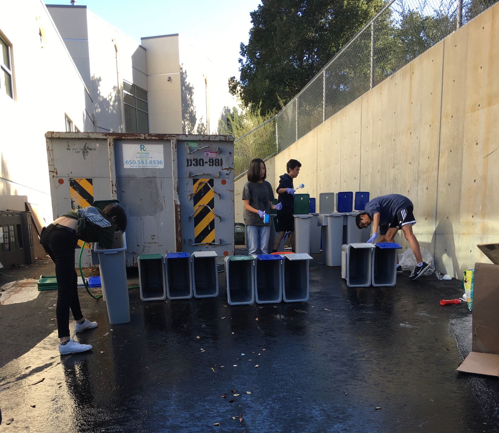

The process
My project idea began in 2019, during my sophomore year of high school. At the time, I was the Secretary of the Carlmont Green Team and was helping the club maintain its tri-bin waste system. Unfortunately, our tri-bin system was becoming too difficult to maintain, as many of our dedicated student volunteers had graduated the previous year. In short, we agreed that it would be best to move the majority of our on-site tri-bins to the corner of school.
Seeing that these perfectly functional tri-bins were just sitting outside and collecting dust, I decided that I wanted to transfer these to Ralston Middle School. By deciding to implement a tri-bin system, my goal was to reduce waste at Ralston and create a sense of environmental awareness within this school community that I was once a part of.
I proposed this idea to Ralston Principal Michael Dougherty on April 8th, 2019. 6 minutes after I hit 'Send,' he declared his interest in helping me bring this idea to life!
I met my advisor, Reyna Oceguera, at one of our Green Team meetings to discuss our tri-bin waste system. As a Waste Zero Specialist at Recology, she played a key role in guiding me through the logistics of the tri-bins and how to best educate the entire student body. Her ongoing support was much appreciated, and knowing that I could count on her to assist me with anything I needed helped me stay optimistic throughout the entire process.
Scheduling and having meetings with the principal was crucial in getting the ball rolling. Although emailing would appear to do the trick, this was not always the case. It took a bit of time to receive responses because of the principal's busy schedule, and I hadn't known he was on paternity leave until a few emails and weeks later. At each meeting, I would show up with questions and things that needed to be done. From there, we would discuss each of our next steps, from creating educational materials to implementation.
Volunteering
As part of the process, I recruited members of my school's Green Team to help me with some of the tri-bin work. Since the bins had been sitting outside for a couple of months, they were dirty and needed to be cleaned. When I announced this volunteer opportunity to the club, I was afraid not many people would show up because cleaning trash bins was unappealing to many. However, I was pleasantly surprised with the turnout! We got the job done within a couple of hours, and the bins were brought to Ralston by Carlmont's custodians later that week.

Implementation
Once the tri-bins were transferred to Ralston, members of the student government helped hang posters around campus to bring at attention to the new tri-bin system. Unfortunately, shortly after we began preparing to put the tri-bins out, school had to shut down due to the coronavirus.
Nevertheless, during quarantine, I kept in contact with Mr. Dougherty and improved the sorting guide and resources. I created an implementation plan, signed by Principal Dougherty, with all the steps that should be taken when students are able to return to school. I am optimistic that the tri-bin waste system will will create a ripple effect that leads to more positive changes at Ralston Middle School and beyond.